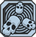
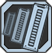

Ward
% Shield Capacity and % Shield Recharge Delay per level.Accelerate
% Gun Damage and % Bullet Speed per level.Suspension
Increases the duration of Phaselock by s per level.Inertia
Kill Skill. Killing an enemy causes you to regenerate shields at a rate of +% per second while gaining +% reload speed per level for a short time.Converge
Your Phaselock ability now also pulls nearby enemies toward the original target.Fleet
Your Movement Speed increases by % per level while your shields are depleted.Sub-Sequence
When an enemy dies under the effects of Phaselock, there is a chance for your Phaselock to seek out and affect another target (% chance per level).Quicken
Increases the Cooldown Rate of your Phaselock's Ability and Swap Speed by % per level.Kinetic Reflection
Kill Skill. Killing an enemy causes you to defelct bullets towards enemies. You take % Damage Reduction and have a % Deflection Chance and Deflected Bullet Damage per level for a short time.
Thoughtlock
Phaselock causes enemies to switch allegiance and fight amongst themselves. Additionally, Phaselock's duration is increased by 4s.
0
Mind's Eye
% Critical Hit Damage and % Accuracy per level.Sweet Release
Killing an enemy who is currently Phaselocked creates Life Orb per level which automatically seeks out and heals you and your friends. The healing is stronger when you or your friend's health is low (up to 15% per Orb).Restoration
% Maximum Health and attack allies to heal them for % of the attack damage per level.Bursting Bubbles
% Fire Rate, Movement Speed, and Reload Speed per level while you have an enemy Phaselocked.Res
You can instantly revive a friend in Fight for Your Life by using Phaselock on him/her. +35% Fight For your Life timeElated
You and your friends regenerate % health per second per level while you have an enemy Phaselocked.Recompense
Taking Health damage has a % chance per level of dealing an equal amount of damage to your attacker.Sustenance
Regenerate up to % of your missing Health per second per level. The lower your health the more powerful the regeneration.Life Tap
Kill Skill. % Life Steal per level.Purple Haze
Killing an enemy creates a lingering Cloud of Decay, dealing constant Slag Damage to enemies who touch it.
0

Foresight
Increases Magazine Size and Reload Speed with all weapon types. % Magazine Size and % Reload Speed per level.Flicker
% Incendiary Damage, % Burn Damage, % Burn Chance per level.Heavy Hitter
% Gun Damage, but % Fire Rate and Reload Speed per level.Immolate
Kill Skill. Adds % Damage per level as Fire Damage to all shots for a short time.Prometheus
Melee Override Skill. Press [melee] to throw an orb of fire. 24 second cooldown.Chain Reaction
While you have an enemy Phaselocked all of your bullets that hit enemies have a % chance per level to ricochet and hit another nearby enemy.Void Portal
Phaselocking an enemy creates a slag explosion.Backdraft
Your melee attacks deal additional Fire Damage. Also, when your shields become depleted you create a fiery explosion, damaging nearby enemies. Your shields must fully recharge between explosions. Backdraft Damage Rank per level.Reaper
You deal % increased Gun Damage per level to any enemy who has more than 50% of his health remaining.Blight Phoenix
Kill Skill. Killing an enemy causes you to deal constant Incendiary and Corrosive Damage to nearby enemies and regenerate bullets for a short time. Damage Rank , Bullet Regen per second per level.Ruin
Action Skill Augmentation. Phaselock now slags, corrodes and electrocutes all nearby enemies.
0